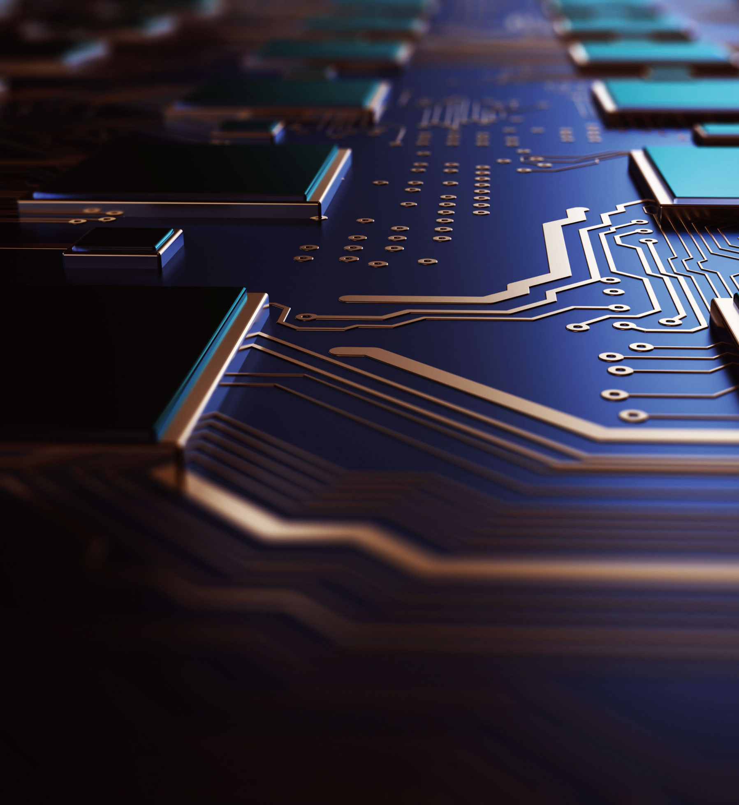

College of Information Technology • IT대학

|
“Global Smart IT Brain” 국내를 넘어 세계 최고의 IT 인재 양성
|
|
전자정보공학부
SCHOOL OF ELECTRONIC ENGINEERING
|
|
 infocom.ssu.ac.kr
infocom.ssu.ac.kr
|
 02-820-0630, 0919
02-820-0630, 0919
|
|
학과 설립
1969 년
|
입학 정원
208 명
|
교직과정 개설여부
o
x
|
전임교원
40 명
|
학과 소개
실용적인 전문기술인력, 창의적인 산업기술인력, 국제화된 기술인력을 양성하고자
노력하고 있다. 학생 대외실적, 교수진 연구성과, 외부 연구수주, 특허와 기술이전
등에서 우수한 성과를 내고 있다. 2015년부터 전자공학전공과 IT융합전공으로
분리하여 신입생을 선발하고 있다. 전공교육 강화를 위한 튜터 및 TA 제도를 과목마다
운영하며, 방학 중 C 프로그래밍, MATLAB, 안드로이드 OS, 통신·신호 처리 시스템
교육을 단기강좌로 제공한다. 학생 역량 강화를 위해 소모임, 경진대회, 공모전,
학술대회 참가 등도 지원하고 있다.
학과 인재상
실용적인 전문기술인력, 창의적인 산업기술인력, 새로운 기술 리더, 국제화된 기술 인력
주요 커리큘럼
지능형 자율 이동체(로봇, 자동차, 비행기 등) 구현을 위한 첨단 반도체
소자 및 설계, 디지털 시스템, 신호 및 영상처리, 디스플레이, 통신시스템
IoT, 정보통신, RF공학, 이동통신, 방송공학, 인공지능, 데이터베이스,
정보보호, 운영체제, 융합소프트웨어, IT-SoC, Machine Learning,
클라우드컴퓨팅
선택교과 가이드
일반선택
수학Ⅰ, 수학Ⅱ, 미적분, 확률과통계, 물리학Ⅰ, 화학Ⅰ, 정보
진로선택
기하, 물리학Ⅱ, 융합과학, 공학일반
동아리 및 소모임 소개
소모임: SSAC(취업), 다윈(취업), MINUTE(취업)
동아리: FC SITE(축구), KISS(농구), 전자전시회(하드웨어 및 소프트웨어개발),
로보틱스(로봇개발), 코드홀릭(소프트웨어개발), BlindC (소프트웨어개발)
학과 특색 프로그램
국제전자박람회등 해외현장방문, 학업보조조교운영, 창의적 공학설계 경진대회,
IT 실무강좌, IT 교육봉사단, 1:1 전공 도우미, 교수와 1:1 프로젝트, 취업 멘토링,
자기계발·학회·공모전 지원
우수 학생 및 학과 성과
교내 최우수학과 선정
정부지원 대형연구센터 유지(IT융합, IT의료융합, 인터넷인프라 등)
학부교수의 숭실대학교 제13대 총장역임
삼성전자사장 배출(졸업생)
취득 가능 자격증
전기기사 자격증, 정보처리기사 자격증, 클라우드시스템 관리 자격증
졸업 후 진로
대기업: 삼성전자, LG전자, SK하이닉스, 현대/기아차, 현대모비스, 포스코, SK텔레콤,
KT, LG U+, NHN, 삼성물산, 카카오
연구소: 한국전자통신연구원, 국방과학연구원, 전자부품연구원
관공서: 한전, 수자원공사, 방송국
소자 및 집적회로, 초고주파 및 광파, 컴퓨터, 자동화 및 네트워크, 통신 및 신호처리,
인공지능 및 인공지능응용, 클라우드 컴퓨팅시스템, IoT등융합기술
Q 전자공학, IT융합, AI융합학부의 차이점은 무엇인가요?
A
세 학과 모두 IT대학 소속 학과로 전자정보공학부(전자공학전공)는 지능형
자율이동체 구현을 위한 첨단 반도체 소자 및 설계, 디지털 시스템, 신호 및 영상 처리
등의 커리큘럼으로 구성되어 있고, 전자정보공학부(IT융합전공)는 loT, 정보통신,
RF공학, 이동통신, 인공지능, 클라우드 등의 커리큘럼으로 구분되어 있으니
진로를 고려하여 지원하여야 합니다. AI융합학부는 스마트 기기와 관련하여
스마트 시스템 하드웨어와 소프트웨어를 융합할 수 있는 전문 인력을 양성하는 학과입니다.